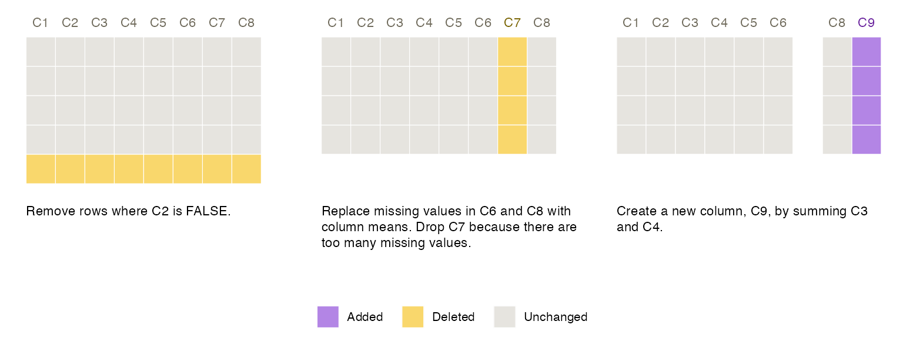
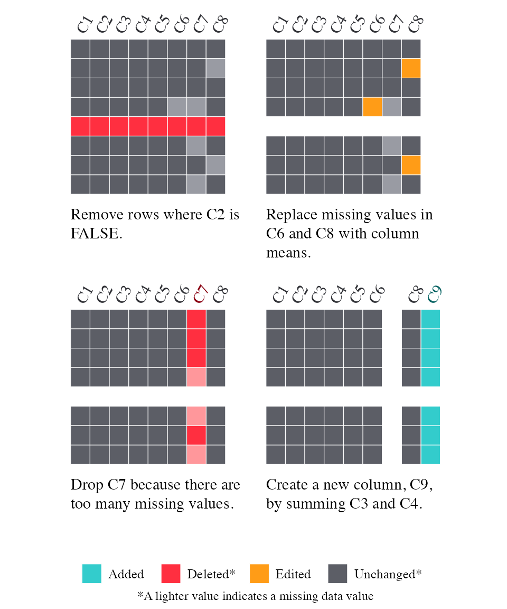

Smallset Timelines
In this vignette, we explain how to use smallsets to build Smallset Timelines. A Smallset Timeline (or Timeline) is a simple visualisation of data preprocessing decisions. More information on Timelines can be found in the Smallset Timeline paper and on YouTube.
Example dataset
In this vignette, we use the synthetic dataset s_data, which is
included in smallsets. It contains 100 observations and 8 variables
(C1-C8). See ?s_data for more information.
## C1 C2 C3 C4 C5 C6 C7 C8
## 1 2 TRUE 33 199 5.44 NA 0.99 NA
## 2 3 TRUE 31 161 4.84 6.74 1.24 1.22
## 3 4 FALSE 33 188 5.97 9.35 -0.04 0.59
## 4 2 FALSE 24 129 4.33 7.80 NA NA
## 5 2 TRUE 32 115 6.64 10.64 NA NA
## 6 3 TRUE 22 101 3.93 7.18 -1.12 -0.63The basics
Each Smallset Timeline is constructed from your dataset and R/R
Markdown/Python data preprocessing script. Scripts must contain a series
of smallsets comments with snapshot
instructions. Your unprocessed dataset (data) and commented
preprocessing script (code) are the only required inputs to
Smallset_Timeline.
Normally, you pass a character string to code
(e.g., “my_code.R” or “/…/…/my_code.R”). However, the script
s_data_preprocess.R is included in smallsets as an example and needs to
be called with system.file.
library(smallsets)
set.seed(145)
Smallset_Timeline(data = s_data,
code = system.file("s_data_preprocess.R", package = "smallsets"))
If s_data_preprocess.R was located in your working directory, the code would look like this.
Smallset_Timeline(data = s_data, code = "s_data_preprocess.R")Supported workflows
The smallsets package currently supports data preprocessing workflows fitting the following description.
- Your dataset is tabular and of class data.frame, data.table, or tibble. Objects of class data.table and tibble are immediately converted to a data.frame by smallsets.
- All preprocessing code is contained in one R, R Markdown, or Python file. Jupyter notebooks (i.e., files with extension .ipynb) are not currently supported.
- The preprocessing code does not change the row names of the original data object as smallsets tracks rows by their names. Merges, joins, collapses, aggregations, and switches between the wide/long format generally involve writing over existing row names and are therefore generally not currently supported by smallsets. Renaming a column results in a column deletion then addition in the Timeline.
- All preprocessing package dependencies are loaded
in the current R session. Information on installing Python packages with
reticulatecan be found here.
Structured comments
Below is the R preprocessing script for s_data (s_data_preprocess.R). It contains several smallsets comments. All comments follow the same formula.
hash + smallsets + instruction + name of data object + caption[…]caption
There are four instructions available.
- start
- end
- snap
- resume
In your script, start and end instructions must be provided. A snapshot is always taken directly after the start instruction and immediately before the end instruction. The snap instruction results in a snapshot being taken after the subsequent line of code. The resume instruction is discussed in the section on resume markers.
The name of the data object can change throughout the script. The snapshot is taken of the object specified in the comment.
s_data_preprocess.R (Don’t run this code
block. It’s an example preprocessing script.)
# smallsets start s_data caption[Remove rows where C2 is FALSE.]caption
s_data <- s_data[s_data$C2 == TRUE,]
s_data$C6[is.na(s_data$C6)] <- mean(s_data$C6, na.rm = TRUE)
# smallsets snap s_data caption[Replace missing values in C6 and C8 with column
# means. Drop C7 because there are too many missing values.]caption
s_data$C8[is.na(s_data$C8)] <- mean(s_data$C8, na.rm = TRUE)
s_data$C7 <- NULL
s_data$C9 <- s_data$C3 + s_data$C4
# smallsets end s_data caption[Create a new column, C9, by summing C3 and
# C4.]captionR Markdown example
Smallset Timelines can be built for preprocessing code in R Markdown
files. If you choose to include the Smallset Timeline as a figure within
the R Markdown report itself, it works best to build the Smallset
Timeline before the preprocessing code is executed, so that you don’t
have to reload your (un-preprocessed) data later to build the Smallset
Timeline. You assign the Smallset Timeline figure to an object, hiding
that code with echo=FALSE. You can then plot it anywhere in
the report. See the example below.
s_data_preprocess.Rmd (Don’t run this code
block. It’s an example script.)
---
title: "My data analysis"
output: pdf_document
---
```{r setup, include = FALSE}
options(knitr.kable.NA = "")
```
# Load packages and data
I load my dataset, `s_data`, which is located in the `smallsets` package.
```{r data}
library(smallsets)
library(knitr)
head(s_data) |> kable(booktabs = TRUE)
```
```{r timeline, eval = TRUE, echo = FALSE}
set.seed(145)
myTimeline <- Smallset_Timeline(data = s_data,
code = system.file("s_data_preprocess.Rmd", package = "smallsets"))
```
# Preprocessing
I need to preprocess the dataset before I can build a model.
```{r preprocess}
# smallsets start s_data caption[Remove rows where C2 is FALSE.]caption
s_data <- s_data[s_data$C2 == TRUE,]
s_data$C6[is.na(s_data$C6)] <- mean(s_data$C6, na.rm = TRUE)
# smallsets snap s_data caption[Replace missing values in C6 and C8 with column
# means. Drop C7 because there are too many missing values.]caption
s_data$C8[is.na(s_data$C8)] <- mean(s_data$C8, na.rm = TRUE)
s_data$C7 <- NULL
s_data$C9 <- s_data$C3 + s_data$C4
# smallsets end s_data caption[Create a new column, C9, by summing C3 and
# C4.]caption
```
Below is a Smallset Timeline, visualising my preprocessing decisions executed above.
```{r print, echo = FALSE, fig.align = "center"}
myTimeline
```
# Modelling
I build a model.
```{r model}
# code to build a model...
```To see the compiled report, run the following code. It will write a PDF titled s_data_preprocess.pdf to your working directory.
rmarkdown::render(system.file("s_data_preprocess.Rmd", package = "smallsets"),
output_dir = getwd())Python example
Python scripts can be passed to the R command
Smallset_Timeline.
Smallset_Timeline(data = s_data,
code = system.file("s_data_preprocess.py", package = "smallsets"))Below is the script s_data_preprocess.py, which does the same thing as s_data_preprocess.R. The smallsets commenting system is the same in Python.
s_data_preprocess.py (Don’t run this code
block. It’s an example preprocessing script.)
# smallsets start s_data caption[Remove rows where C2
# is FALSE.]caption
s_data = s_data[s_data["C2"] == True]
s_data["C6"].fillna(value = s_data["C6"].mean(), inplace = True)
# smallsets snap s_data caption[Replace missing values in C6 and
# C8 with column means. Drop C7 because there are too many
# missing values.]caption
s_data["C8"].fillna(value = s_data["C8"].mean(), inplace = True)
s_data = s_data.drop(columns = ["C7"])
s_data["C9"] = s_data["C3"] + s_data["C4"]
# smallsets end s_data caption[Create a new column,
# C9, by summing C3 and C4.]captionIsolate a data deletion
If you’d like to isolate a data deletion in an intermediate snapshot, leave a blank line between the structured comment and the data deletion code. For example, if we want to split the middle Timeline snapshot into two snapshots, we can add another structured comment, and blank line, before the data deletion code.
s_data_preprocess_4.R (Don’t run this code
block. It’s an example preprocessing script.)
# smallsets start s_data caption[Remove rows where C2
# is FALSE.]caption
s_data <- s_data[s_data$C2 == TRUE, ]
s_data$C6[is.na(s_data$C6)] <- mean(s_data$C6, na.rm = TRUE)
# smallsets snap s_data caption[Replace missing values in C6 and
# C8 with column means.]caption
s_data$C8[is.na(s_data$C8)] <- mean(s_data$C8, na.rm = TRUE)
# smallsets snap s_data caption[Drop C7 because there are too many
# missing values.]caption
s_data$C7 <- NULL
s_data$C9 <- s_data$C3 + s_data$C4
# smallsets end s_data caption[Create a new column,
# C9, by summing C3 and C4.]caption
set.seed(145)
Smallset_Timeline(data = s_data,
code = system.file("s_data_preprocess_4.R", package = "smallsets"))
Smallset selection
There are two Smallset decisions to make: how many rows
(rowCount) and how to select them
(rowSelect).
If rowSelect = NULL (the default setting), rows are
selected through a simple random sample. The following code would
randomly sample seven rows for the Smallset.
Smallset_Timeline(data = s_data,
code = system.file("s_data_preprocess.R", package = "smallsets"),
rowCount = 7, rowSelect = NULL)To use the other two selection methods, which are optimisation
problems proposed here,
you will need a Gurobi license as
they rely on the Gurobi
solver v9.1.2 (free academic licenses are available). Richard
Schuster’s “Gurobi
installation guide” in the prioritizr package provides
step-by-step instructions on installing Gurobi in R.
If rowSelect = 1, the coverage problem is used
to select rows. For each snapshot, it finds at least one example of a
data change, if there is one. You can return the solution to the console
with rowReturn = TRUE.
Smallset_Timeline(data = s_data,
code = system.file("s_data_preprocess.R", package = "smallsets"),
rowCount = 5, rowSelect = 1, rowReturn = TRUE)## Smallset rows: 27, 42, 95, 96, 99After the optimisation problem is solved once, the solution can be
passed to rowNums to avoid having to re-solve it with each
run of Smallset_Timeline.
Smallset_Timeline(data = s_data,
code = system.file("s_data_preprocess.R", package = "smallsets"),
rowCount = 5, rowNums = c(27, 42, 95, 96, 99))
Here, the coverage solution misses a data edit example in
the second snapshot, motivating use of the other selection method
(rowSelect = 2): the coverage + variety
optimisation problem, which looks for rows affected by the preprocessing
steps differently. The drawback of rowSelect = 2 is
runtime for large datasets. One potential workaround to a long
runtime is building a Timeline from a sample of the dataset. However,
this should be done with caution.
Smallset_Timeline(data = s_data,
code = system.file("s_data_preprocess.R", package = "smallsets"),
rowSelect = 2, rowReturn = T)## Smallset rows: 3, 32, 80, 97, 99
Timeline customisation
There are built-in options to customise a Timeline. The examples in
this section highlight some of them. See ?Smallset_Timeline
for a full list of options.
Example 1
Some differences: custom colour palette, data in the snapshots, highlighting missing data, a different font, and no ghost data.
set.seed(145)
Smallset_Timeline(
data = s_data,
code = system.file("s_data_preprocess.R", package = "smallsets"),
colours = list(
same = "#E6E3DF",
edit = "#FFC500",
add = "#5BA2A6",
delete = "#DDC492"
),
printedData = TRUE,
truncateData = 4,
missingDataTints = TRUE,
ghostData = FALSE,
font = "Palatino",
sizing = sets_sizing(data = 1.5),
labelling = sets_labelling(labelCol = "darker", labelColDif = 1)
)
Example 2
Some differences: use of a built-in colour palette, split into two rows, and rotated column names.
set.seed(145)
Smallset_Timeline(
data = s_data,
code = system.file("s_data_preprocess.R", package = "smallsets"),
colours = 3,
ghostData = TRUE,
missingDataTints = TRUE,
font = "Arial Rounded MT Bold",
spacing = sets_spacing(
captions = 2,
rows = 2,
degree = 45,
header = 1
),
sizing = sets_sizing(
legend = 7
)
)
Alt text
You can retrieve alternative text (alt text) for your Smallset
Timeline. When altText = TRUE, a draft of alt text is
printed to the console. It can be copied from the console, revised for
readability, and included with the figure.
set.seed(145)
Smallset_Timeline(data = s_data,
code = system.file("s_data_preprocess.R", package = "smallsets"),
altText = TRUE)The Smallset Timeline contains 3 Smallset snapshots. Data edits are represented with the colour slategray2. Data additions are represented with the colour plum. Data deletions are represented with the colour navajowhite. Snapshot 1 is 5 rows by 8 columns. The columns, in order from left to right, are: C1, C2, C3, C4, C5, C6, C7, and C8. 1 row is navajowhite. The caption is quote Remove rows where C2 is FALSE. unquote. Snapshot 2 is 4 rows by 8 columns. Column C7 is navajowhite. 3 cells are slategray2. The caption is quote Replace missing values in C6 and C8 with column means. Drop C7 because there are too many missing values. unquote. Snapshot 3 is 4 rows by 8 columns. Column C9 is plum. The caption is quote Create a new column, C9, by summing C3 and C4. unquote.Resume markers
A resume marker is a vertical line between snapshots signalling that preprocessing stopped to run an analysis and then resumed to facilitate a new/revised analysis. It is added to a Timeline with a resume instruction in a structured comment.
In this example, we resume data preprocessing to transform C9 into a categorical variable.
s_data_preprocess_resume.R (Don’t run this
code block. It’s an example preprocessing script.)
# smallsets start s_data caption[Remove rows where C2
# is FALSE.]caption
s_data <- s_data[s_data$C2 == TRUE,]
s_data$C6[is.na(s_data$C6)] <- mean(s_data$C6, na.rm = TRUE)
# smallsets snap s_data caption[Replace missing values in C6 and
# C8 with column means. Drop C7 because there are too many
# missing values.]caption
s_data$C8[is.na(s_data$C8)] <- mean(s_data$C8, na.rm = TRUE)
s_data$C7 <- NULL
# smallsets snap s_data caption[Create a new column,
# C9, by summing C3 and C4.]caption
s_data$C9 <- s_data$C3 + s_data$C4
# smallsets resume s_data caption[Ran the analysis
# and decided to make a change.]caption
t <- quantile(s_data$C9, c(0:3 / 3))
s_data$C10 = with(s_data, cut(
C9,
t,
include.lowest = T,
labels = c("Low", "Med", "High")
))
# smallsets end s_data caption[Create a new categorical
# column, C10, based on C9 terciles.]caption
set.seed(145)
Smallset_Timeline(data = s_data,
code = system.file("s_data_preprocess_resume.R", package = "smallsets"),
sizing = sets_sizing(
columns = 1.8,
captions = 1.8,
legend = 7,
icons = .8
),
spacing = sets_spacing(
captions = 3,
degree = 60,
header = 3.5,
right = 2
)
)